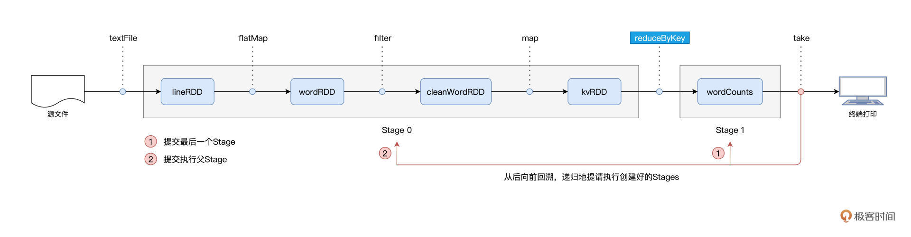

- 00 开篇词 入门Spark，你需要学会“三步走”.md.html
- 01 Spark：从“大数据的Hello World”开始.md.html
- 02 RDD与编程模型：延迟计算是怎么回事？.md.html
- 03 RDD常用算子（一）：RDD内部的数据转换.md.html
- 04 进程模型与分布式部署：分布式计算是怎么回事？.md.html
- 05 调度系统：如何把握分布式计算的精髓？.md.html
- 06 Shuffle管理：为什么Shuffle是性能瓶颈？.md.html
- 07 RDD常用算子（二）：Spark如何实现数据聚合？.md.html
- 08 内存管理：Spark如何使用内存？.md.html
- 09 RDD常用算子（三）：数据的准备、重分布与持久化.md.html
- 10 广播变量 & 累加器：共享变量是用来做什么的？.md.html
- 11 存储系统：数据到底都存哪儿了？.md.html
- 12 基础配置详解：哪些参数会影响应用程序稳定性？.md.html
- 13 Spark SQL：让我们从“小汽车摇号分析”开始.md.html
- 14 台前幕后：DataFrame与Spark SQL的由来.md.html
- 15 数据源与数据格式：DataFrame从何而来？.md.html
- 16 数据转换：如何在DataFrame之上做数据处理？.md.html
- 17 数据关联：不同的关联形式与实现机制该怎么选？.md.html
- 18 数据关联优化：都有哪些Join策略，开发者该如何取舍？.md.html
- 19 配置项详解：哪些参数会影响应用程序执行性能？.md.html
- 20 Hive + Spark强强联合：分布式数仓的不二之选.md.html
- 21 Spark UI（上）：如何高效地定位性能问题？.md.html
- 22 Spark UI（下）：如何高效地定位性能问题？.md.html
- 23 Spark MLlib：从“房价预测”开始.md.html
- 24 特征工程（上）：有哪些常用的特征处理函数？.md.html
- 25 特征工程（下）：有哪些常用的特征处理函数？.md.html
- 26 模型训练（上）：决策树系列算法详解.md.html
- 27 模型训练（中）：回归、分类和聚类算法详解.md.html
- 28 模型训练（下）：协同过滤与频繁项集算法详解.md.html
- 29 Spark MLlib Pipeline：高效开发机器学习应用.md.html
- 30 Structured Streaming：从“流动的Word Count”开始.md.html
- 31 新一代流处理框架：Batch mode和Continuous mode哪家强？.md.html
- 32 Window操作&Watermark：流处理引擎提供了哪些优秀机制？.md.html
- 33 流计算中的数据关联：流与流、流与批.md.html
- 34 Spark + Kafka：流计算中的“万金油”.md.html
- 用户故事 小王：保持空杯心态，不做井底之蛙.md.html
- 结束语 进入时间裂缝，持续学习.md.html
- 捐赠
05 调度系统：如何把握分布式计算的精髓？
你好，我是吴磊。
在上一讲，我们通过“包工头与施工工人”的例子，初步认识了Spark进程模型中的Driver和Executors、以及它们之间的交互关系。Driver负责解析用户代码、构建计算流图，然后将计算流图转化为分布式任务，并把任务分发给集群中的Executors交付运行。
不过，你可能会好奇：“对于给定的用户代码和相应的计算流图，Driver是怎么把计算图拆解为分布式任务，又是按照什么规则分发给Executors的呢？还有，Executors具体又是如何执行分布式任务的呢？”
我们之前一再强调，分布式计算的精髓，在于如何把抽象的计算图，转化为实实在在的分布式计算任务，然后以并行计算的方式交付执行。深入理解分布式计算，是我们做好大数据开发的关键和前提，它能有效避免我们掉入“单机思维”的陷阱，同时也能为性能导向的开发奠定坚实基础。
而上面的这一系列问题，恰恰是我们吃透分布式计算的关键所在。因此，今天这一讲，我们就顺着这些问题，一起去深入探究Spark调度系统，进而弄清楚分布式计算的来龙去脉。
角色划分与斯巴克建筑集团
在上一讲，我们通过“包工头与施工工人”的类比、以及Word Count的示例，其实已经大致厘清了Spark分布式任务调度的核心环节与关键步骤。今天这一讲的核心任务，就是带你去深入其中的每一个环节，做到“既见森林、也见树木”。这里咱们不妨先把这些环节和涉及的组件梳理出来，从而让你在整体上有一个清晰的把握。
不难发现，表中的步骤与组件众多，要是照本宣科地去讲调度系统，先别说你可能看着看着就开始犯困了，就连我自己，也可能写着写着就睡着了。因此，咱们不妨把这些环节与组件融入到一个故事中去，让你像读小说一样，在捧腹之余弄懂Spark调度系统。
话说很久以前，美国有一家名扬海内外的建筑集团，名为“斯巴克（Spark）”。这家建筑集团规模庞大，设有一个总公司（Driver），和多个分公司（Executors）。斯巴克公司的主要服务对象是建筑设计师（开发者），建筑设计师负责提供设计图纸（用户代码、计算图），而斯巴克公司的主营业务是将图纸落地、建造起一栋栋高楼大厦。
要完成主营业务，集团公司需要招聘能够看懂图纸、并将其转化为建筑项目的架构师，因此斯巴克公司挖角了行业知名架构师“戴格”（DAGScheduler）。集团公司给戴格安排的职位是总公司的一把手，同时要求两位创始元老“塔斯克”和“拜肯德”全力配合戴格的工作。
听到这里，你肯定会问“塔斯克”和“拜肯德”是谁呢？
塔斯克（TaskScheduler）一毕业就加入了斯巴克公司，现任总公司施工经理，成功指挥完成了多个大大小小的工程项目，业绩非常突出，深得公司赏识。拜肯德（SchedulerBackend）和塔斯克在上大学的时候就是上下铺，关系好得穿一条裤子，现任总公司人力资源总监，负责与分公司协调、安排人力资源。从公司的安排来看，三位主管的分工还是比较明确的。
之所以说塔斯克（TaskScheduler）和拜肯德（SchedulerBackend）是公司元老，原因在于，在SparkContext / SparkSession的初始化中，TaskScheduler和SchedulerBackend是最早、且同时被创建的调度系统组件。这二者的关系非常微妙：SchedulerBackend在构造方法中引用TaskScheduler，而TaskScheduler在初始化时会引用SchedulerBackend。
值得一提的是，SchedulerBackend组件的实例化，取决于开发者指定的Spark MasterURL，也就是我们使用spark-shell（或是spark-submit）时指定的–master 参数，如“–master spark://ip:host”就代表Standalone 部署模式，“–master yarn”就代表YARN 模式等等。
不难发现，SchedulerBackend 与资源管理器（Standalone、YARN、Mesos等）强绑定，是资源管理器在 Spark 中的代理。其实硬件资源与人力资源一样，都是“干活儿的”。所以，如果我们用集团公司的人力资源来类比Spark集群的硬件资源，那么“拜肯德”就是名副其实的人力资源总监。
从全局视角来看，DAGScheduler是任务调度的发起者，DAGScheduler以TaskSet为粒度，向TaskScheduler提交任务调度请求。TaskScheduler在初始化的过程中，会创建任务调度队列，任务调度队列用于缓存 DAGScheduler提交的TaskSets。TaskScheduler结合SchedulerBackend提供的 WorkerOffer，按照预先设置的调度策略依次对队列中的任务进行调度。

简而言之，DAGScheduler手里有“活儿”，SchedulerBackend手里有“人力”，TaskScheduler的核心职能，就是把合适的“活儿”派发到合适的“人”的手里。由此可见，TaskScheduler承担的是承上启下、上通下达的关键角色，这也正是我们将“塔斯克”视为斯巴克建筑公司元老之一的重要原因。
那么，了解了这三个主管的角色职责，我们接下来就来详细说说，他们是怎么各自完成自己的工作的。
总架戴格：DAGScheduler
回到我们的故事里，戴格在两位元老的协助下，工作开展得还算顺利，然而，冰层之下，暗流涌动，作为一名空降的领导，戴老板还需亲自“露两手”，才能赢得平级的认可与信任。
作为集团公司的“总架”（总架构师），戴格的核心职责，是把计算图DAG拆分为执行阶段Stages，Stages指的是不同的运行阶段，同时还要负责把Stages转化为任务集合TaskSets，也就是把“建筑图纸”转化成可执行、可操作的“建筑项目”。
用一句话来概括从 DAG 到 Stages 的拆分过程，那就是：以 Actions 算子为起点，从后向前回溯 DAG，以 Shuffle 操作为边界去划分 Stages。
在[第2讲]介绍编程模型的时候，我们以Word Count为例，提到Spark作业的运行分为两个环节，第一个是以惰性的方式构建计算图，第二个则是通过Actions算子触发作业的从头计算：

对于图中的第二个环节，Spark在实际运行的过程中，会把它再细化为两个步骤。第一个步骤，就是以Shuffle为边界，从后向前以递归的方式，把逻辑上的计算图DAG，转化成一个又一个Stages。
我们还是以Word Count为例，Spark以take算子为起点，依次把DAG中的RDD划入到第一个Stage，直到遇到reduceByKey算子。由于reduceByKey算子会引入Shuffle，因此第一个Stage创建完毕，且只包含wordCounts这一个RDD。接下来，Spark继续向前回溯，由于未曾碰到会引入Shuffle的算子，因此它把“沿途”所有的RDD都划入了第二个Stage。
在Stages创建完毕之后，就到了触发计算的第二个步骤：Spark从后向前，以递归的方式，依次提请执行所有的Stages。

具体来说，在Word Count的例子中，DAGScheduler最先提请执行的是Stage1。在提交的时候，DAGScheduler发现Stage1依赖的父Stage，也就是Stage0，还没有执行过，那么这个时候它会把Stage1的提交动作压栈，转而去提请执行Stage0。当Stage0执行完毕的时候，DAGScheduler通过出栈的动作，再次提请执行Stage 1。
对于提请执行的每一个Stage，DAGScheduler根据Stage内RDD的partitions属性创建分布式任务集合TaskSet。TaskSet包含一个又一个分布式任务Task，RDD有多少数据分区，TaskSet就包含多少个Task。换句话说，Task与RDD的分区，是一一对应的。
你可能会问：“Task代表的是分布式任务，不过它具体是什么呢？”要更好地认识Task，我们不妨来看看它的关键属性。
在上表中，stageId、stageAttemptId标记了Task与执行阶段Stage的所属关系；taskBinary则封装了隶属于这个执行阶段的用户代码；partition就是我们刚刚说的RDD数据分区；locs属性以字符串的形式记录了该任务倾向的计算节点或是Executor ID。
不难发现，taskBinary、partition和locs这三个属性，一起描述了这样一件事情：Task应该在哪里（locs）为谁（partition）执行什么任务（taskBinary）。
到这里，我们讲完了戴格的职责，让我们来一起简单汇总一下，戴格指代的是DAGScheduler，DAGScheduler的主要职责有三个：
- 根据用户代码构建DAG；
- 以Shuffle为边界切割Stages；
- 基于Stages创建TaskSets，并将TaskSets提交给TaskScheduler请求调度。
现在，戴格不辱使命，完成了“建筑图纸”到“建筑项目”的转化，接下来，他需要把这些“活儿”下派给塔斯克，由塔斯克进一步完成任务的委派。
不过，对于塔斯克来说，要想把这些“活儿”委派出去，他得先摸清楚集团内有多少“适龄劳动力”才行。要做到这一点，他必须仰仗死党：拜肯德的帮忙。
拜肯德：SchedulerBackend
作为集团公司的人力资源总监，拜肯德的核心职责，就是实时汇总并掌握全公司的人力资源状况。前面我们讲了，全公司的人力资源对应的就是Spark的计算资源。对于集群中可用的计算资源，SchedulerBackend用一个叫做ExecutorDataMap的数据结构，来记录每一个计算节点中Executors的资源状态。
这里的ExecutorDataMap是一种HashMap，它的Key是标记 Executor 的字符串，Value是一种叫做ExecutorData的数据结构。ExecutorData用于封装Executor的资源状态，如RPC地址、主机地址、可用CPU核数和满配CPU核数等等，它相当于是对Executor做的“资源画像”。
有了ExecutorDataMap这本“人力资源小册子”，对内，SchedulerBackend可以就Executor做“资源画像”；对外，SchedulerBackend以WorkerOffer为粒度提供计算资源。其中，WorkerOffer封装了Executor ID、主机地址和CPU核数，它用来表示一份可用于调度任务的空闲资源。
显然，基于Executor资源画像，SchedulerBackend可以同时提供多个WorkerOffer用于分布式任务调度。WorkerOffer这个名字起得很传神，Offer的字面意思是公司给你提供的工作机会，到了Spark调度系统的上下文，它就变成了使用硬件资源的机会。
你可能会好奇，坐镇总公司的拜肯德，对于整个集团的人力资源，他是怎么做到足不出户就如数家珍的？一个篱笆三个桩，一个好汉三个帮。仅凭拜肯德一己之力，自然是力不从心，幕后功臣实际上是驻扎在分公司的一众小弟们：ExecutorBackend。
SchedulerBackend与集群内所有Executors中的ExecutorBackend保持周期性通信，双方通过LaunchedExecutor、RemoveExecutor、StatusUpdate等消息来互通有无、变更可用计算资源。拜肯德正是通过这些小弟发送的“信件”，来不停地更新自己手中的那本小册子，从而对集团人力资源了如指掌。
塔斯克：TaskScheduler
一把手戴格有“活儿”，三把手拜肯德出“人力”，接下来，终于轮到牵线搭桥的塔斯克出马了。作为施工经理，塔斯克的核心职责是，给定拜肯德提供的“人力”，遴选出最合适的“活儿”并派发出去。而这个遴选的过程，就是任务调度的核心所在，如下图步骤3所示：
那么问题来了，对于SchedulerBackend提供的一个个WorkerOffer，TaskScheduler是依据什么规则来挑选Tasks的呢？
用一句话来回答，对于给定的WorkerOffer，TaskScheduler是按照任务的本地倾向性，来遴选出TaskSet中适合调度的Tasks。这是什么意思呢？听上去比较抽象，我们还是从DAGScheduler在Stage内创建任务集TaskSet说起。
我们刚刚说过，Task与RDD的partitions是一一对应的，在创建Task的过程中，DAGScheduler会根据数据分区的物理地址，来为Task设置locs属性。locs属性记录了数据分区所在的计算节点、甚至是Executor进程ID。
举例来说，当我们调用textFile API从HDFS文件系统中读取源文件时，Spark会根据HDFS NameNode当中记录的元数据，获取数据分区的存储地址，例如node0:/rootPath/partition0-replica0，node1:/rootPath/partition0-replica1和node2:/rootPath/partition0-replica2。
那么，DAGScheduler在为该数据分区创建Task0的时候，会把这些地址中的计算节点记录到Task0的locs属性。
如此一来，当TaskScheduler需要调度Task0这个分布式任务的时候，根据Task0的locs属性，它就知道：“Task0所需处理的数据分区，在节点node0、node1、node2上存有副本，因此，如果WorkOffer是来自这3个节点的计算资源，那对Task0来说就是投其所好”。
从这个例子我们就能更好地理解，每个任务都是自带本地倾向性的，换句话说，每个任务都有自己的“调度意愿”。
回到斯巴克建筑集团的类比，就好比是某个“活儿”，并不是所有人都能干，而是只倾向于让某些人来做，因为他们更专业。比如砌墙这件事，更倾向于给工龄3年以上的瓦工来做；而吊顶，则更倾向于给经验超过5年的木工来做，诸如此类。
像上面这种定向到计算节点粒度的本地性倾向，Spark中的术语叫做NODE_LOCAL。除了定向到节点，Task还可以定向到进程（Executor）、机架、任意地址，它们对应的术语分别是PROCESS_LOCAL、RACK_LOCAL和ANY。
对于倾向PROCESS_LOCAL的Task来说，它要求对应的数据分区在某个进程（Executor）中存有副本；而对于倾向RACK_LOCAL的Task来说，它仅要求相应的数据分区存在于同一机架即可。ANY则等同于无定向，也就是Task对于分发的目的地没有倾向性，被调度到哪里都可以。
下图展示的是，TaskScheduler依据本地性倾向，依次进行任务调度的运行逻辑：
不难发现，从PROCESS_LOCAL、NODE_LOCAL、到RACK_LOCAL、再到ANY，Task的本地性倾向逐渐从严苛变得宽松。TaskScheduler接收到WorkerOffer之后，也正是按照这个顺序来遍历TaskSet中的Tasks，优先调度本地性倾向为PROCESS_LOCAL的Task，而NODE_LOCAL次之，RACK_LOCAL为再次，最后是ANY。
你可能会问：“Spark区分对待不同的本地倾向性，它的初衷和意图是什么呢？”实际上，不同的本地性倾向，本质上是用来区分计算（代码）与数据之间的关系。
Spark调度系统的核心思想，是“数据不动、代码动”。也就是说，在任务调度的过程中，为了完成分布式计算，Spark倾向于让数据待在原地、保持不动，而把计算任务（代码）调度、分发到数据所在的地方，从而消除数据分发引入的性能隐患。毕竟，相比分发数据，分发代码要轻量得多。
本地性倾向则意味着代码和数据应该在哪里“相会”，PROCESS_LOCAL是在JVM进程中，NODE_LOCAL是在节点内，RACK_LOCAL是不超出物理机架的范围，而ANY则代表“无所谓、不重要”。
好啦，到此为止，结合WorkerOffer与任务的本地性倾向，塔斯克TaskScheduler挑选出了适合调度的“活儿”：Tasks。接下来，TaskScheduler就把这些Tasks通过LaunchTask消息，发送给好基友SchedulerBackend。人力资源总监SchedulerBackend拿到这些活儿之后，同样使用LaunchTask消息，把活儿进一步下发给分公司的小弟：ExecutorBackend。
那么小弟ExecutorBackend拿到活之后，是怎么工作的呢？我们接着往下看吧！
付诸执行：ExecutorBackend
作为分公司的人力资源主管，ExecutorBackend拿到“活儿”之后，随即把活儿派发给分公司的建筑工人。这些工人，就是Executors线程池中一个又一个的CPU线程，每个线程负责处理一个Task。
每当Task处理完毕，这些线程便会通过ExecutorBackend，向Driver端的SchedulerBackend发送StatusUpdate事件，告知Task执行状态。接下来，TaskScheduler与SchedulerBackend通过接力的方式，最终把状态汇报给DAGScheduler，如图中步骤7、8、9所示：
对于同一个TaskSet当中的Tasks来说，当它们分别完成了任务调度与任务执行这两个环节时，也就是上图中步骤1到步骤9的计算过程，Spark调度系统就完成了DAG中某一个Stage的任务调度。
不过，故事到这里并未结束。我们知道，一个DAG会包含多个Stages，一个Stage的结束即宣告下一个Stage的开始，而这也是戴格起初将DAG划分为Stages的意义所在。只有当所有的Stages全部调度、执行完毕，才表示一个完整的Spark作业宣告结束。
路遥知马力，在一起合作了一个又一个建筑项目之后，空降老大戴格终于赢得了元老塔斯克和拜肯德的信任与认可，坐稳了斯巴克建筑集团的头把交椅。来日可期，戴格的前景一片光明。
重点回顾
今天这一讲，我们用斯巴克建筑集团的故事，介绍了Spark调度系统的工作原理。对于调度系统的工作流程，你需要掌握表格中的5个关键环节：
具体说来，任务调度分为如下5个步骤：
- DAGScheduler以Shuffle为边界，将开发者设计的计算图DAG拆分为多个执行阶段Stages，然后为每个Stage创建任务集TaskSet。-
- SchedulerBackend通过与Executors中的ExecutorBackend的交互来实时地获取集群中可用的计算资源，并将这些信息记录到ExecutorDataMap数据结构。-
- 与此同时，SchedulerBackend根据ExecutorDataMap中可用资源创建WorkerOffer，以WorkerOffer为粒度提供计算资源。-
- 对于给定WorkerOffer，TaskScheduler结合TaskSet中任务的本地性倾向，按照PROCESS_LOCAL、NODE_LOCAL、RACK_LOCAL和ANY的顺序，依次对TaskSet中的任务进行遍历，优先调度本地性倾向要求苛刻的Task。-
- 被选中的Task由TaskScheduler传递给SchedulerBackend，再由SchedulerBackend分发到Executors中的ExecutorBackend。Executors接收到Task之后，即调用本地线程池来执行分布式任务。
今天的内容就是这些，调度系统是分布式计算系统的核心，掌握了Spark任务调度的来龙去脉，你也就把握住了Spark分布式计算引擎的精髓，这会为你开发出高性能的Spark分布式应用打下坚实基础。
每课一练
课程的最后，我来给你留一道练习题。请你想一想，DAGScheduler如何得知一个Stage中所有的Tasks都已调度、执行完毕，然后才决定开始调度DAG中的下一个Stage？
欢迎你在评论区回答这个问题。如果你觉得这一讲对你有所帮助，也欢迎你把它分享给更多的朋友和同事。我在评论区等你，咱们下一讲见！
© 2019 - 2023 Liangliang Lee. Powered by gin and hexo-theme-book.